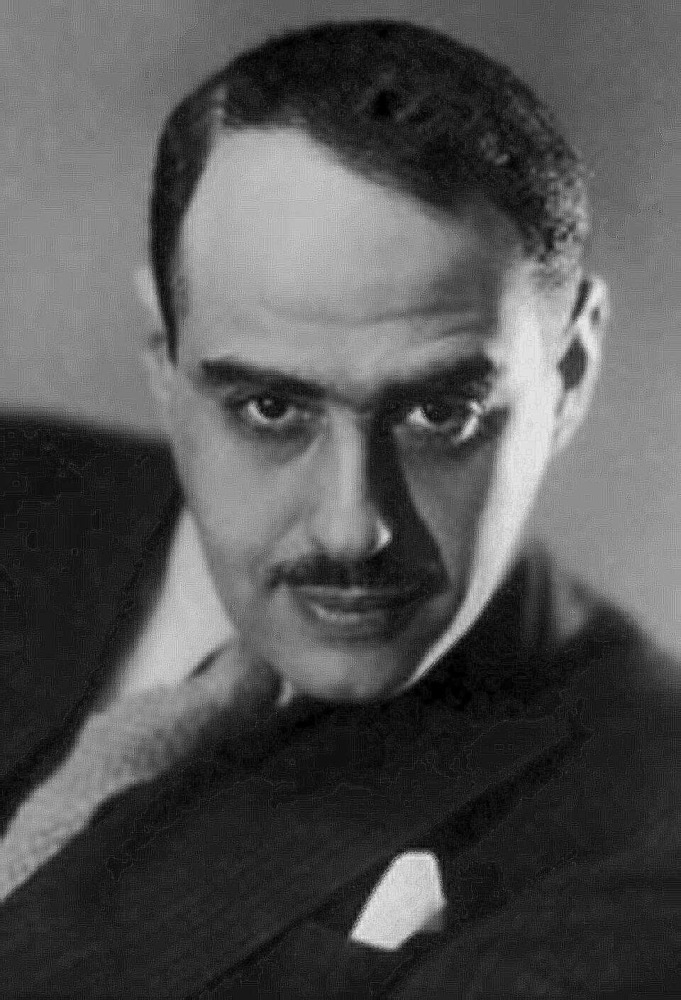

Il y a 130 ans naissait Leitão de Barros, pionnier du cinéma portugais
Il a réalisé le premier film parlant portugais, filmé les pêcheurs de Nazaré et inventé les marches populaires de Lisbonne. Portrait d'un artiste aux mille métiers, longtemps oublié.

Le premier film parlant de l'histoire du cinéma portugais racontait la vie d'une chanteuse de fado. Il s'appelait A Severa, il est sorti en 1931, et on le doit à José Júlio Marques Leitão de Barros, né il y a 130 ans, le 22 octobre 1896. Cinéaste, peintre, journaliste, homme de théâtre, organisateur de fêtes publiques : peu de figures ont autant marqué la vie culturelle portugaise du XXe siècle, et peu ont été aussi vite oubliées.
Un artiste aux mille métiers
Leitão de Barros passe par l'École des beaux-arts, les facultés des sciences et des lettres de Lisbonne et l'École normale supérieure. Il enseigne ensuite le dessin au lycée Passos Manuel. En parallèle, il peint, surtout des aquarelles, et entre dans le journalisme dès 1916. Il ne le quittera plus.
Sa vie familiale le place au cœur du milieu artistique. Il épouse la peintre Helena Roque Gameiro, fille du grand aquarelliste Alfredo Roque Gameiro, et devient le beau-frère de l'architecte Cottinelli Telmo.
Les débuts au cinéma
En 1918, il tourne ses premiers films pour la Lusitânia Film, l'une des sociétés qui tentaient alors de créer une véritable production nationale : deux comédies, Malmequer et Mal de Espanha, et un troisième film resté inachevé. L'aventure tourne court, et il s'éloigne de la caméra pendant plusieurs années.
Nazaré et la naissance d'un style
Il y revient à la fin des années 1920, à Nazaré, où il filme les pêcheurs et leurs familles. De ce séjour naissent un court documentaire, Nazaré, Praia de Pescadores (1929), puis Maria do Mar (1930), dans lequel les habitants du village jouent leur propre rôle aux côtés d'acteurs professionnels. On ne parlait pas encore de docufiction, mais c'est bien de cela qu'il s'agit. Le film a été restauré par la Cinemateca, et il est aujourd'hui projeté avec une partition écrite par le pianiste Bernardo Sassetti.
La même année, il réalise son premier long métrage, Lisboa, Crónica Anedótica, une promenade dans la Lisbonne de 1930, de ses rues à ses marchés, où l'on croise Beatriz Costa, Vasco Santana et bien d'autres vedettes de l'époque.
A Severa, le fado entre au cinéma
En 1931 sort A Severa, adapté de la pièce de Júlio Dantas sur Maria Severa, la chanteuse de la Mouraria. Pour la première fois, le public portugais entend ses acteurs parler, et le fado se fait entendre au cinéma. Le film est un immense succès. Plus tard, Leitão de Barros dira que le moment le plus important de sa carrière avait été la création de la Tóbis, la première grande société de production du pays, imaginée dans une petite salle du Teatro São Luiz, à Lisbonne.
Suivent As Pupilas do Senhor Reitor (1935), d'après Júlio Dinis, Bocage (1936) et Maria Papoila (1937). En 1942, il retrouve la mer avec Ala-Arriba!, tourné à Póvoa de Varzim. Le titre reprend le cri que lançaient les pêcheurs en tirant ensemble leurs barques sur la plage. Puis viennent les grandes fresques historiques, Inês de Castro et Camões (1946).
L'homme des fêtes de l'Estado Novo
Leitão de Barros n'est pas seulement cinéaste. Le régime de Salazar fait de lui l'un de ses grands metteurs en scène. On lui doit la création des marches populaires de Lisbonne, devenues depuis l'un des temps forts des fêtes de la Saint-Antoine. Il assure la direction artistique de l'album Portugal 1934 et dirige en 1947 le grand cortège du huitième centenaire de la prise de Lisbonne. Il réalise aussi des documentaires de commande pour le gouvernement.
Cette proximité avec le pouvoir a longtemps pesé sur sa réputation. Après 1974, on l'a surtout vu comme un cinéaste du régime, et son œuvre a été laissée de côté. Les historiens nuancent aujourd'hui ce portrait : dans ses articles, il savait aussi se montrer critique, en particulier sur l'image touristique que le régime donnait du pays.
« Os Corvos », ses dernières années
Après la guerre, il prend ses distances avec la vie officielle. De 1953 à sa mort, il tient dans le Diário de Notícias une chronique hebdomadaire, « Os Corvos », lue dans tout le pays. Il meurt à Lisbonne en 1967.
Une œuvre redécouverte
Ces dernières années, son travail sort de l'oubli. La Cinemateca a édité Lisboa, Crónica Anedótica en DVD et restauré Maria do Mar puis Ala-Arriba!. Sa famille a confié ses archives à la Fondation Gulbenkian : correspondance, scénarios, photos de tournage. Deux de ses petites-filles, Joana Leitão de Barros et Ana Mantero, lui ont consacré une biographie.
Pour ses 130 ans, la Cinemateca Portuguesa lui rend hommage avec un cycle de projections à Lisbonne jusqu'au 26 octobre. Ala-Arriba! est également présenté au festival Doclisboa.